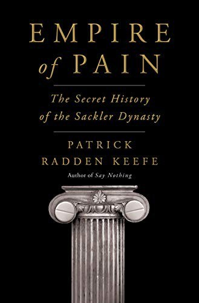

Library › Power & Strategy
Empire of Pain: The Secret History of the Sackler Dynasty — Summary & Key Lessons

Three brothers built a fortune on a wonder drug for pain. Half a million Americans died. The family says it did nothing wrong.
📖 OPEN THE FULL INTERACTIVE BREAKDOWN →🌐 Read it in Hindi, Hinglish, Gujarati, Tamil & 22 more languages — free, with audio.
💡 The Big Idea
Keefe traces three generations: Arthur Sackler, the marketing genius who invented modern pharmaceutical promotion (and pioneered the tranquilizer campaigns for Valium) while never practicing medicine again; his nephews Raymond, Mortimer and Richard, who built Purdue on OxyContin and launched it in 1996 with a campaign that recast pain as the fifth vital sign and addiction risk as negligible; and the decades of cover that followed: FDA regulators hired away mid-review, felony pleas absorbed as expenses, billions extracted as the overdose death curve climbed, and a bankruptcy engineered to convert litigation into a settlement that would preserve the family's wealth. The book is a masterclass in how incentives, regulatory design and reputational infrastructure interact: every guardrail (medical journals, regulators, courts, museums) was individually rational and collectively captured.
🧠 The 10 Key Lessons
Lesson 1: Marketing Can Outrun Medicine
Arthur's Playbook
Arthur Sackler moved advertising into medicine: journal supplements, detail men with reprints, Key Food style campaigns aimed at doctors' egos and anxieties. Valium became the first blockbuster on promotion alone. The enduring lesson: when marketing budgets exceed R&D budgets in a trust-based category, the category's truth becomes negotiable, and someone will negotiate it.
📖 Example: Arthur's Valium campaign made it the most-prescribed drug in America by 1970s, prescribed for everything from anxiety to muscle strain, with dependence data arriving years after the habit was national. Read the full example →
⚡ Do this: In any health, finance or education venture, compute your marketing-to-R&D ratio. If marketing dwarfs substance, you have chosen a side of the line; consequences arrive on schedule.
Lesson 2: Own the Messenger, Not Just the Message
The Revolving Door
Purdue's launch was blessed by an FDA label claiming rare addiction risk, shaped in part by a reviewer who joined Purdue weeks after approval. The capture was not a bribe; it was a career structure. Institutions whose experts' futures depend on the industry they regulate will drift toward the industry's truth. Fix the revolving door or the door fixes your rules.
📖 Example: The OxyContin label's 12-hour dosing claim (critical to sales and to the dose-escalation cycle that followed) survived years of internal FDA doubts and Purdue's own failing trial data, with complaints answered by label supplements rather than warnings. Read the full example →
⚡ Do this: Audit who certifies your product's claims and what those certifiers earn after certifying. Design separation now, before a journalist designs it for you.
Lesson 3: Pain as a Vital Sign: Manufacturing a Market
The Fifth Vital Sign Campaign
Purdue funded pain-management societies, CME courses and patient materials that taught doctors to treat pain as a measurable vital sign, with opioids as the treatment and OxyContin as the 12-hour answer. The genius was upstream: instead of selling to prescribers, they taught the framework that would produce prescribers. Influence the taxonomy and the market writes itself.
📖 Example: Hospitals posted pain-score posters in corridors; satisfaction surveys rewarded opioid-heavy protocols; a generation of prescribers was trained inside Purdue-funded curricula without ever meeting a salesman. Read the full example →
⚡ Do this: Ask who defines the categories your customers think in. If a competitor owns the framework, competing inside it is losing politely. Build your own taxonomy or exit.
Lesson 4: The Label Is the Crime Scene
12 Hours and the Abuser-Proof Pivot
The 12-hour claim drove both sales and harm: when OxyContin wore off early, patients escalated doses, and dose escalation is addiction's on-ramp. Internal emails showed awareness within years. Later, the abuse-deterrent reformulation (harder to crush) protected the patent cliff while pushing abusers to heroin: harm shifted, never reduced. Product claims are not copywriting; they are epidemiology.
📖 Example: Court documents showed Purdue tracking early-abuse signals in the first years (using OxyContin in place of a dozen milder opioids) and continuing the same promotion anyway. Read the full example →
⚡ Do this: Write your product's strongest claim, then map its second-order behavior (what users do when the claim fails them). If the second order harms, the first order is marketing, not product.
Lesson 5: Fines as Subscriptions
The 2007 Plea
Purdue's 2007 federal guilty plea (misbranding, $634 million) was treated internally as a cost of doing business; Richard Sackler's emails from that period showed contempt for abusers and continuity of strategy. When penalties are smaller than profits, they become subscription fees. The design fix is personal accountability: officers and owners, not just entities, must face consequences or the entity is a shield.
📖 Example: Sales of OxyContin continued through the plea period with the same sales force and higher quotas; the fine equaled roughly a year or two of OxyContin revenue, absorbed without strategic change. Read the full example →
⚡ Do this: If you model compliance risk in your venture, price it as recurring or existential, never as a one-off expense. Optimizing against subscription fines is a business model choice, and juries eventually read it that way.
Lesson 6: Extract While the Window Exists
The Family Withdrawals
As lawsuits mounted (2007 to 2018), the family distributed billions from Purdue into trusts and overseas entities; by the time states sued, the company was a shell relative to the extracted wealth. The lesson for any venture: liability follows assets, so transfers during litigation risk are designed to outrun it. Regulators and plaintiffs now treat suspicious wealth migration as evidence, not protection.
📖 Example: Massachusetts' complaint walked through $4-plus billion in family distributions during the crisis years, payments that later became the centerpiece of settlement negotiations. Read the full example →
⚡ Do this: In your own ventures, never move assets in ways you would be unwilling to explain under oath in five years. Every structure is a future deposition.
Lesson 7: Philanthropy as Reputation Collateral
The Sackler Wings
The family's giving (the Met wing, the Louvre gallery, Oxford, the Smithsonian) bought something subtler than advertising: cultural immunity. Journalists hesitated, institutions flattered, and the name became synonymous with enlightenment. The reckoning (institutions cutting ties en masse after 2019) proved the shield was rented, not owned. Reputation bought in bulk is reputational leverage for your opponents the day the ledger opens.
📖 Example: The Met, the Guggenheim, the Louvre and Oxford all announced Sackler name removals within months of the 2019 reporting wave, a coordinated cultural divorce that no contract had anticipated. Read the full example →
⚡ Do this: Diversify your reputation across conduct, not just communication. One source of goodwill, however impressive, is a single point of failure.
Lesson 8: Bankruptcy as a Wealth Vault
The Chapter 11 Endgame
Purdue's 2019 bankruptcy converted thousands of lawsuits into a single negotiation, with the family offering billions (eventually around $6 billion under appeal) in exchange for sweeping immunity from future civil claims. Courts ultimately balked at non-consensual immunity for non-debtor billionaires (the Supreme Court's Harrington decision), reopening the question. The system's lesson: bankruptcy was designed to save operating businesses, not to pre-wash dynastic wealth, and judges are re-learning that boundary.
📖 Example: The plan would have let family members pay from trusts while gaining protection from future opioid litigation, a structure the district court called incompatible with bankruptcy law before appellate turns kept the saga alive. Read the full example →
⚡ Do this: If your venture could generate mass liability, structure insurance and entity separation now, when choices are clean. Endgame engineering under subpoena is improvisation with your own fortune.
Lesson 9: Whistleblowers and Paper Trails
The People Who Fought
The book's heroes are procedural: DEA's Joe Rannazzisi pushing quotas, prosecutor John Brownlee's 2007 case, whistleblowers in sales and compliance, and journalists assembling exhibit lists from discovery. Every crack in the empire started with a document someone kept. Institutional memory (emails, minutes, memos) is the raw material of eventual accountability.
📖 Example: Richard Sackler's own emails (save the tree, kill the messenger memes aside) became trial exhibits, the empire's sharpest swords forged in its own office. Read the full example →
⚡ Do this: Write every internal message as if it will be an exhibit, because the ones that matter will be. Cultures that email cleanly survive discovery; cultures that scheme in writing fund their prosecutors.
Lesson 10: What Accountability Looks Like When the Law Lags
The Unfinished Verdict
No Sackler has faced criminal charges; civil settlements (up to $7.4 billion in the final proposed framework) are paid by entities and trusts, and the family maintains innocence. The book closes on the gap between moral ledger and legal ledger. For builders, the takeaway is design: build your venture so that its legal exposure and its moral exposure converge (personal skin in outcomes, transparent data, aligned incentives), because systems that let them diverge produce Sacklers.
📖 Example: The final settlements fund treatment and abatement across states while permitting the family to keep most of the fortune, an ending Keefe deliberately leaves ringing rather than resolved. Read the full example →
⚡ Do this: Design your incentive structure so the people who profit from risk also carry it personally: equity cliffs, clawbacks, personal guarantees. Divergence between moral and legal ledgers is a design flaw you can fix today.
✅ 5-Step Action Plan
- Keep marketing-to-substance ratios visible and defensible in trust-based categories.
- Audit the independence of whoever certifies your claims and their future employers.
- Map second-order user behavior when your strongest claim fails; fix or kill the claim.
- Price compliance risk as recurring or existential, never as a one-off fine.
- Build personal accountability into risk-taking (clawbacks, guarantees) before you need it.
⚠️ When This Doesn't Work
Keefe reports with access to extensive discovery, but litigation continues in various forms and several family members deny wrongdoing and dispute the book's framing; no family member has been criminally convicted. Some episodes rest on civil complaints and emails entered in evidence, which are allegations until adjudicated. The book is a masterpiece of narrative nonfiction and a lawyer's exhibit list, not a court verdict.
💀 The Graveyard Proves It
💊 Purdue Pharma — The Painkiller That Became a National Emergency. Burn: $8.3B federal settlement; family to pay up to $6B; 200,000+ U.S. deaths. Read the full case study →
💬 Best Quotes from Empire of Pain: The Secret History of the Sackler Dynasty
- “It was not a failure of chemistry. Morphine worked in 1800 and it works now. It was a failure of incentives, at industrial scale.”
- “The question was never whether the drug was good. The question was who was allowed to say so, and what it cost to become that person.”
- “Philanthropy is the most efficient laundering mechanism ever devised: you buy immortality with money that never faces a jury.”
- “The documents showed that they knew. That was the finding, again and again: they knew.”
Interactive version: mark lessons as read, listen in your language, share quote cards.